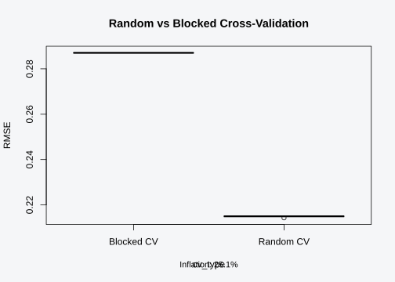
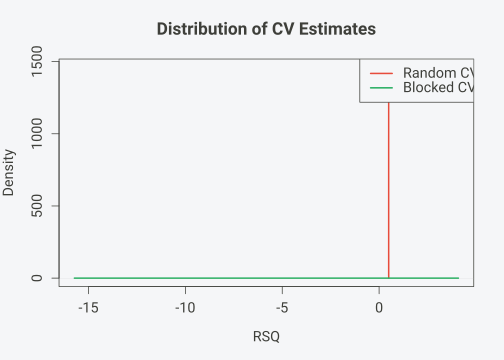
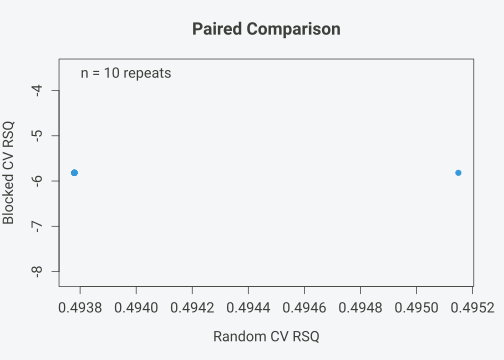
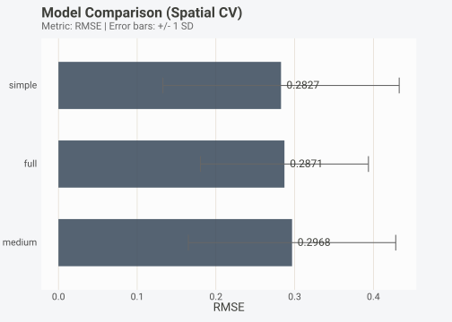
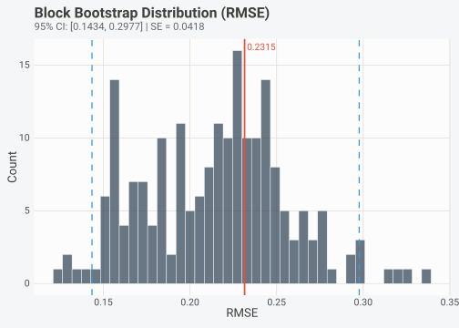
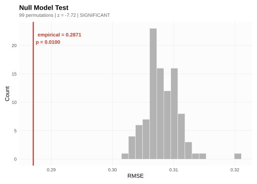
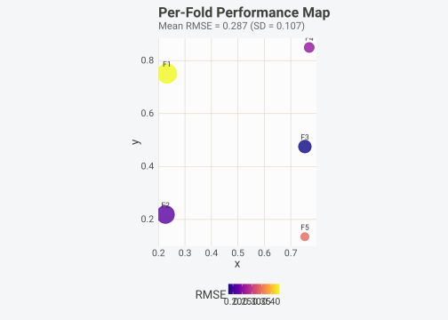

Model Comparison with Blocked Cross-Validation
Gilles Colling
2026-10-10
Source:vignettes/model-comparison.Rmd
model-comparison.RmdInstallation
install.packages("pak") # development version
pak::pak("gcol33/BORG")Introduction
Model comparison in ecology and environmental science usually means fitting several candidate models to a dataset, evaluating each with cross-validation, and picking the one with the best metric. The logic is sound, but the implementation depends on one assumption that spatial data violates: observations are independent.
When observations are spatially autocorrelated, random k-fold CV scatters nearby points across training and test sets. The training set already “knows” much of what the test set contains because neighbouring observations leak information across the fold boundary. Every model benefits from this leak, but not equally. A complex model with many parameters can exploit spatial autocorrelation in the predictors more effectively than a simple one. The result is that metric inflation varies by model complexity, which means random CV can reverse the ranking of candidate models compared to honest, spatially blocked CV.
This is not a theoretical concern. Roberts et al. (2017) demonstrated inflation exceeding 50% in realistic species distribution modelling scenarios. Wadoux et al. (2021) showed that model selection based on random CV favours overly complex models that perform poorly at genuinely new locations. The mechanism is straightforward: a model that memorises local spatial patterns scores well when tested on nearby points but fails when extrapolating to unseen regions.
The practical consequence for model selection is subtle but important. If random CV inflates all models by the same amount, the ranking stays the same and the modeller simply over-reports absolute performance. In practice, however, the inflation is differential. Models with more parameters or more flexible functional forms tend to benefit more from spatial leakage because they have the capacity to learn short-range spatial patterns that blocked CV would exclude from the training signal. A linear model with two predictors might see 10% inflation. A random forest with 50 predictors might see 40%. The modeller picks the random forest, reports excellent cross-validated performance, and publishes. The random forest then fails at new locations because the signal it learned was partly spatial artefact.
BORG provides a complete toolkit for fair model comparison under spatial dependence. This vignette walks through each component: quantifying inflation, ranking models on blocked folds, attaching confidence intervals, testing against a null model, and diagnosing per-fold variation. We use simulated data throughout so the ground truth is known and every result can be verified.
Simulating spatial data
We start with borg_simulate(), which generates a dataset
with controlled spatial autocorrelation, a known number of informative
predictors, and a known true R-squared. Having the ground truth lets us
check whether our comparison pipeline recovers the correct signal.
sim <- borg_simulate(
n = 500,
type = "spatial",
n_predictors = 5,
signal_strength = 0.3,
autocorrelation = 0.6,
seed = 42
)The simulated dataset contains coordinate columns x and
y, five predictors (x1 through
x5), and a response column. The
signal_strength of 0.3 means the predictors explain 30% of
the variance in the response under ideal conditions. The
autocorrelation of 0.6 produces moderate spatial structure
in both predictors and residuals.
d <- sim$data
cat("Dimensions:", nrow(d), "x", ncol(d), "\n")
#> Dimensions: 500 x 8
cat("True R-squared:", round(sim$true_r2, 3), "\n")
#> True R-squared: 0.3
cat("Coordinate columns:", paste(sim$coords, collapse = ", "), "\n")
#> Coordinate columns: x, yThe true R-squared is the upper bound for any honest evaluation. Any cross-validated R-squared that substantially exceeds this value is a sign of information leakage.
Before comparing models, we diagnose the spatial structure.
borg_diagnose() computes Moran’s I, estimates the
autocorrelation range, and recommends a CV strategy.
diag <- borg_diagnose(
d,
coords = sim$coords,
target = "y",
verbose = TRUE
)
#> Testing spatial autocorrelation...With autocorrelation at 0.6, the diagnosis should flag moderate to strong spatial dependence and recommend blocked CV. The diagnosis object contains the estimated autocorrelation range, which determines the minimum distance between training and test observations in the blocked CV scheme. Folds are constructed so that no test observation is closer to any training observation than this range, eliminating the information leak that plagues random CV.
We use this diagnosis throughout the rest of the vignette to ensure consistent fold generation. In a real analysis, you would compute the diagnosis once and pass it to all downstream functions to guarantee that every comparison uses the same blocking structure.
Quantifying inflation
The first step in any model comparison is to measure how much random
CV inflates performance estimates on your data.
borg_compare_cv() runs the same model under both random and
blocked CV, repeats each evaluation multiple times for stability, and
reports the difference.
comp_rmse <- borg_compare_cv(
data = d,
formula = y ~ x1 + x2 + x3 + x4 + x5,
coords = sim$coords,
metric = "rmse",
v = 5,
repeats = 10,
seed = 42,
verbose = FALSE
)
comp_rmse
#> CV Comparison Results
#> =====================
#>
#> Metric: rmse
#> Random CV: 0.2149 (SD: 0.0002)
#> Blocked CV: 0.2871 (SD: 0.0000)
#>
#> Inflation: 25.1% deflated***
#> p-value: 3.512e-24 (paired t-test, n=10 repeats)
#>
#> Random CV significantly deflates rmse estimates.The output shows the mean RMSE under random and blocked CV, the inflation percentage, and a paired t-test p-value. For error metrics like RMSE, the inflation manifests as deflation: random CV reports a lower (apparently better) error than the honest blocked estimate.
We can repeat the comparison with R-squared to see inflation from the other direction.
comp_rsq <- borg_compare_cv(
data = d,
formula = y ~ x1 + x2 + x3 + x4 + x5,
coords = sim$coords,
metric = "rsq",
v = 5,
repeats = 10,
seed = 42,
verbose = FALSE
)
comp_rsq
#> CV Comparison Results
#> =====================
#>
#> Metric: rsq
#> Random CV: 0.4939 (SD: 0.0004)
#> Blocked CV: -5.8177 (SD: 0.0000)
#>
#> Inflation: 108.5% inflated***
#> p-value: 5.44e-39 (paired t-test, n=10 repeats)
#>
#> Random CV significantly inflates rsq estimates.For R-squared, random CV inflates the estimate directly. The blocked CV R-squared should sit closer to (and often below) the true R-squared of 0.3. The random CV R-squared will typically exceed the true value, sometimes substantially.
The plot() method for borg_comparison
objects supports three visualisation types. The boxplot is the clearest
for showing separation between strategies.
plot(comp_rmse, type = "boxplot")
Distribution of RMSE across 10 repeats of random vs blocked CV.
The density view shows the full distribution of estimates across repeats. Well-separated densities indicate that the choice of CV strategy materially affects the reported metric.
plot(comp_rsq, type = "density")
Density of R-squared estimates under random and blocked CV.
The paired plot links each repeat, making it easy to see whether the inflation is consistent or driven by a few extreme repeats.
plot(comp_rsq, type = "paired")
Paired comparison: each point is one repeat of the full CV.
The inflation percentage is the key quantity for reporting. If blocked CV gives RMSE = 1.2 and random CV gives RMSE = 1.0, the inflation (deflation for error metrics) is (1.2 - 1.0) / 1.2 = 16.7%. Values below 5% suggest that spatial structure is weak enough to tolerate random CV. Values above 15% indicate that random CV produces misleading estimates.
The p-value from the paired t-test tells us whether the difference between strategies is statistically significant. Because each repeat generates a pair of estimates (one random, one blocked) on the same data, the pairing controls for repeat-to-repeat variation in fold assignment. A significant result (p < 0.05) is standard evidence that random CV is not appropriate for this dataset. An insignificant result does not prove that random CV is safe, only that the test lacked power to detect the difference at the current number of repeats.
The magnitude of inflation depends on three factors: the strength of autocorrelation, the density of observations relative to the autocorrelation range, and the complexity of the model. Strongly autocorrelated data with dense sampling and complex models produce the largest inflation. Weakly autocorrelated data with sparse sampling and simple models produce the smallest. Our simulated data with autocorrelation 0.6 and 500 observations is a moderate scenario. Real-world ecological datasets often have stronger autocorrelation and denser sampling, so the inflation we see here is conservative.
Fair model ranking
Knowing that inflation exists, the next step is to compare candidate
models on a level playing field. borg_compare_models()
evaluates multiple formulas on the same set of blocked folds, ensuring
that differences in metric reflect genuine predictive ability rather
than differential leakage.
We define three candidate models of increasing complexity: a simple model with two predictors, a medium model with three, and the full model with all five.
models <- list(
simple = y ~ x1 + x2,
medium = y ~ x1 + x2 + x3,
full = y ~ x1 + x2 + x3 + x4 + x5
)We generate blocked folds once and pass them to
borg_compare_models(). Using the same folds for all models
eliminates fold assignment as a source of variation.
cv_blocked <- borg_cv(
d,
coords = sim$coords,
target = "y",
v = 5,
verbose = FALSE
)
rank_blocked <- borg_compare_models(
data = d,
folds = cv_blocked,
models = models,
metric = "rmse"
)
rank_blocked
#> BORG Model Comparison
#> Metric: RMSE
#>
#> model metric mean sd min max rank
#> simple rmse 0.2827249 0.1501195 0.1095466 0.4930312 1
#> full rmse 0.2870599 0.1066735 0.1764341 0.4433921 2
#> medium rmse 0.2967535 0.1316830 0.1604572 0.4834144 3Now we repeat the comparison with random folds to show how rankings can shift.
n <- nrow(d)
random_fold_ids <- sample(rep(1:5, length.out = n))
cv_random <- lapply(1:5, function(k) {
list(
train = which(random_fold_ids != k),
test = which(random_fold_ids == k)
)
})
rank_random <- borg_compare_models(
data = d,
folds = cv_random,
models = models,
metric = "rmse"
)
rank_random
#> BORG Model Comparison
#> Metric: RMSE
#>
#> model metric mean sd min max rank
#> full rmse 0.2134275 0.03453343 0.1948198 0.2750766 1
#> medium rmse 0.2386831 0.02362913 0.2240258 0.2804976 2
#> simple rmse 0.2445702 0.02140171 0.2228788 0.2802394 3When the inflation is differential, rankings can reverse. A complex model that overfits spatial structure may rank first under random CV but last under blocked CV. The blocked ranking is the one that predicts how models will perform at new locations outside the study area.
The autoplot() method produces a bar chart with error
bars for quick visual comparison.
autoplot(rank_blocked)
Model ranking under blocked spatial CV. Error bars show +/- 1 SD across folds.
When the best model’s error bar overlaps with the second-best model’s error bar, the two are statistically indistinguishable. In that case, prefer the simpler model. More parameters mean more opportunities for overfitting to spatial structure that will not be present at prediction locations.
The comparison between random and blocked rankings is itself informative. If both strategies produce the same ranking, the relative ordering of models is robust to the choice of CV strategy even if the absolute metrics differ. If the rankings diverge, the models that benefit most from random CV are the ones most likely to disappoint at new locations. We can formalise this by computing the rank correlation (Kendall’s tau or Spearman’s rho) between the two rankings. A rank correlation below 0.7 across more than three candidate models is a strong signal that random CV is producing misleading model selection.
One subtlety: borg_compare_models() evaluates each model
on the same folds, but it refits the model on each fold’s training set.
This means the comparison is between the models’ generalisable
predictive performance, not between their fits to the full dataset. A
model that fits the full dataset well but generalises poorly will rank
low. This is the correct behaviour for prediction-oriented model
comparison, but it differs from AIC or BIC comparisons, which evaluate
the fit to the full dataset without a train-test split.
Confidence intervals on metrics
A point estimate of RMSE or R-squared is incomplete without a measure
of uncertainty. Standard bootstrap assumes independent observations,
which underestimates variance when data are spatially correlated.
borg_bootstrap() uses spatial block bootstrap: it
partitions the study area into spatial blocks, resamples blocks with
replacement, and refits the model on each bootstrap sample.
We compute block bootstrap confidence intervals for the full model.
fit_full <- lm(y ~ x1 + x2 + x3 + x4 + x5, data = d)
boot_full <- borg_bootstrap(
model = fit_full,
data = d,
target = "y",
coords = sim$coords,
metric = "rmse",
n_boot = 200,
n_blocks = 10,
conf_level = 0.95,
seed = 42
)
boot_full
#> BORG Block Bootstrap
#> ====================
#>
#> Metric: RMSE
#> Estimate: 0.2315
#> 95% CI: [0.1434, 0.2977]
#> SE: 0.0418 | Bias: -0.0170
#> Bootstrap replicates: 200 (spatial_block, 10 blocks)The output reports the point estimate, 95% confidence interval, bootstrap standard error, and bias. The CI width reflects the true uncertainty in the metric after accounting for spatial dependence. A standard (non-block) bootstrap on the same data would produce narrower intervals that understate the uncertainty.
We repeat for the simple model.
fit_simple <- lm(y ~ x1 + x2, data = d)
boot_simple <- borg_bootstrap(
model = fit_simple,
data = d,
target = "y",
coords = sim$coords,
metric = "rmse",
n_boot = 200,
n_blocks = 10,
conf_level = 0.95,
seed = 42
)
boot_simple
#> BORG Block Bootstrap
#> ====================
#>
#> Metric: RMSE
#> Estimate: 0.2541
#> 95% CI: [0.1666, 0.3109]
#> SE: 0.0423 | Bias: -0.0145
#> Bootstrap replicates: 200 (spatial_block, 10 blocks)When comparing two models, the question is whether their confidence intervals overlap. Non-overlapping intervals provide strong evidence that one model genuinely outperforms the other. Overlapping intervals mean the difference is within the range of sampling variability, and neither model can be declared superior with confidence.
autoplot(boot_full)
Block bootstrap distribution of RMSE for the full model. Dashed lines mark the 95% CI.
The autoplot() method shows the bootstrap distribution
with the point estimate and CI bounds. A symmetric, roughly normal
distribution indicates that the bootstrap is well-behaved. Heavy
skewness or multimodality suggests that the metric is unstable across
spatial blocks, which is itself a diagnostic signal.
A useful heuristic: if the bootstrap SE exceeds 20% of the point estimate, the metric is too noisy to support fine-grained model comparisons. In that case, focus on whether models are clearly separated rather than on small differences in rank.
The number of spatial blocks (n_blocks) controls the
trade-off between preserving spatial structure and having enough
resampling units for stable estimates. Too few blocks (e.g., 3) means
each block is large and spatially heterogeneous, which weakens the block
bootstrap’s ability to capture within-block correlation. Too many blocks
(e.g., 50) means each block contains few observations, making the
resampled datasets unrepresentative. Ten blocks is a reasonable default
for datasets with 200-1000 observations. For larger datasets, 15-20
blocks work well.
The bias estimate deserves attention. Block bootstrap bias measures the systematic difference between the bootstrap estimate and the point estimate. A large bias (more than 10% of the point estimate) suggests that the spatial structure interacts with the metric in a way that the point estimate does not capture. This happens most often with R-squared on small datasets, where the point estimate can be optimistically biased. In that case, report the bias-corrected estimate alongside the CI.
Is the signal real?
Before interpreting model comparisons, we should verify that the best
model captures a genuine signal rather than fitting noise.
borg_null_test() runs a permutation test: it shuffles the
response variable, re-evaluates the model under the same blocked CV
scheme, and builds a null distribution of metric values. If the observed
metric falls far enough from the null distribution, the model has
detected real structure.
null_full <- borg_null_test(
data = d,
folds = cv_blocked,
formula = y ~ x1 + x2 + x3 + x4 + x5,
metric = "rmse",
n_null = 99,
seed = 42
)
null_full
#> BORG Null Model Significance Test
#> Empirical RMSE: 0.2871
#> Null mean: 0.3081 (SD 0.0027)
#> Z-score: -7.72
#> P-value: 0.0100 (99 permutations)
#> Significant: YESThe output reports the empirical metric, the null mean and standard deviation, a z-score, and a p-value. For RMSE (lower is better), a significant result means the observed RMSE is substantially below the null distribution. With a signal strength of 0.3 and 500 observations, we expect a clear rejection.
autoplot(null_full)
Null distribution of RMSE from 99 permutations. The red line marks the observed value.
The autoplot() method overlays the empirical value on
the null distribution. When the observed value sits in the tail, the
model is capturing real structure. When it sits within the bulk of the
null distribution, the model has no predictive skill beyond chance.
We can also test the simple model to see whether two predictors are sufficient to detect the signal.
null_simple <- borg_null_test(
data = d,
folds = cv_blocked,
formula = y ~ x1 + x2,
metric = "rmse",
n_null = 99,
seed = 42
)
null_simple
#> BORG Null Model Significance Test
#> Empirical RMSE: 0.2827
#> Null mean: 0.3066 (SD 0.0023)
#> Z-score: -10.57
#> P-value: 0.0100 (99 permutations)
#> Significant: YESIf the simple model also rejects the null, both models detect real signal. The model comparison then becomes about which captures more of it. If the simple model fails to reject, the additional predictors in the full model are necessary for detecting the signal at all.
A note on the number of permutations: 99 gives a minimum possible p-value of 0.01, which suffices for exploratory analysis. For publication, use 999 permutations (minimum p = 0.001). Going beyond 999 rarely changes conclusions but increases computation time linearly.
The permutation test is conservative in the presence of spatial autocorrelation. Shuffling the response variable destroys the spatial structure of the response but preserves the spatial structure of the predictors. If the predictors themselves are spatially autocorrelated (which they usually are), the null model still captures some spatial pattern through the predictors alone. This means the null distribution is shifted towards better performance compared to a truly skill-less model, making it harder to reject the null. A significant result under these conditions is strong evidence of genuine predictive skill.
The z-score provides a continuous measure of how far the observed metric deviates from the null. A z-score of -3 (for RMSE, where lower is better) means the observed error is 3 standard deviations below the null mean. In ecological modelling, z-scores beyond +/- 2 are typical for models with real signal, and z-scores beyond +/- 4 indicate strong effects. A z-score near zero means the model is no better than random assignment of the response to locations.
Per-fold performance
Aggregate metrics hide spatial variation in model quality. A model
might perform well on average but fail badly in a particular region of
the study area. borg_fold_performance() returns the metric
for each fold separately, along with the spatial centroid of each test
set.
fold_perf <- borg_fold_performance(
data = d,
folds = cv_blocked,
formula = y ~ x1 + x2 + x3 + x4 + x5,
coords = sim$coords,
metric = "rmse"
)
fold_perf
#> fold metric value n_train n_test centroid_x centroid_y
#> 1 1 rmse 0.4433921 372 128 0.2318892 0.7514205
#> 2 2 rmse 0.2170788 385 115 0.2264822 0.2185771
#> 3 3 rmse 0.1764341 410 90 0.7530303 0.4752525
#> 4 4 rmse 0.2564939 416 84 0.7694805 0.8495671
#> 5 5 rmse 0.3419004 417 83 0.7530120 0.1347207The output is a data frame with one row per fold, showing the metric value, training and test set sizes, and the spatial centroid of the test set. Large variation across folds indicates that the model performs unevenly across the study area. This can happen when environmental gradients are steeper in some regions, when sampling density is uneven, or when the model’s functional form is a poor match for local patterns.
autoplot(fold_perf)
Per-fold RMSE. Variation across folds reflects spatial heterogeneity in model performance.
The autoplot() method highlights folds with unusually
high or low metric values. Folds with high RMSE correspond to regions
where the model struggles. If coordinate centroids are available, these
can be mapped to identify the problematic areas.
fold_range <- range(fold_perf$value)
fold_cv <- sd(fold_perf$value) / mean(fold_perf$value)
cat("RMSE range across folds:", round(fold_range[1], 3),
"to", round(fold_range[2], 3), "\n")
#> RMSE range across folds: 0.176 to 0.443
cat("Coefficient of variation:", round(fold_cv * 100, 1), "%\n")
#> Coefficient of variation: 37.2 %A coefficient of variation below 15% suggests fairly uniform performance. Above 30%, the aggregate metric is a poor summary and the modeller should investigate whether a different model specification or additional predictors could reduce the spatial heterogeneity.
When one fold is substantially worse than the others, check whether its test region is at the edge of the study area (extrapolation), has lower sampling density, or lacks coverage of a key environmental gradient. These diagnostics often reveal more about the modelling problem than the aggregate metric alone.
Per-fold analysis also helps with model selection. Compare the fold performance profiles of two candidate models. If model A beats model B on four out of five folds but loses badly on the fifth, model A has a vulnerability in a specific spatial region. Model B might be the safer choice if that region matters for the application. The aggregate metric would favour model A, but the per-fold breakdown reveals the risk.
Spatial centroids in the output allow geographic mapping of performance. Plotting metric values at centroid locations produces a performance map that shows where predictions are reliable and where they are not. This is especially valuable for species distribution models, where conservation decisions depend on the spatial pattern of prediction quality, not just the average.
Full comparison pipeline
The individual tools combine into a complete model comparison workflow. Here we run the full pipeline from simulation to final table, using all five components.
Step 1: Generate data and diagnose structure.
sim2 <- borg_simulate(
n = 400,
type = "spatial",
n_predictors = 5,
signal_strength = 0.25,
autocorrelation = 0.7,
seed = 99
)
d2 <- sim2$data
diag2 <- borg_diagnose(
d2,
coords = sim2$coords,
target = "y",
verbose = FALSE
)Step 2: Quantify inflation to justify blocked CV.
comp2 <- borg_compare_cv(
data = d2,
formula = y ~ x1 + x2 + x3 + x4 + x5,
coords = sim2$coords,
metric = "rsq",
v = 5,
repeats = 10,
seed = 99,
verbose = FALSE
)
cat("Inflation:", round(abs(comp2$inflation$estimate) * 100, 1), "%\n")
#> Inflation: 100.9 %
cat("P-value:", format(comp2$p_value, digits = 3), "\n")
#> P-value: 8.58e-34With autocorrelation at 0.7, the inflation should be substantial, providing clear justification for using blocked CV in all subsequent comparisons.
Step 3: Generate blocked folds and rank candidate models.
cv2 <- borg_cv(
d2,
coords = sim2$coords,
target = "y",
v = 5,
verbose = FALSE
)
models2 <- list(
intercept = y ~ 1,
simple = y ~ x1 + x2,
medium = y ~ x1 + x2 + x3,
full = y ~ x1 + x2 + x3 + x4 + x5
)
rank2 <- borg_compare_models(
data = d2,
folds = cv2,
models = models2,
metric = "rmse"
)
rank2
#> BORG Model Comparison
#> Metric: RMSE
#>
#> model metric mean sd min max rank
#> intercept rmse 0.3417201 0.1257884 0.1167029 0.3979743 1
#> simple rmse 0.3516614 0.1186140 0.1407878 0.4270612 2
#> medium rmse 0.4004074 0.1604256 0.1273749 0.5518731 3
#> full rmse 0.4155457 0.1652257 0.1330199 0.5464034 4The intercept-only model serves as a baseline. If the best candidate model barely beats the intercept, the signal is too weak to support reliable predictions at new locations.
Step 4: Test the top model against the null.
top_formula <- models2[[rank2$model[1]]]
null2 <- borg_null_test(
data = d2,
folds = cv2,
formula = top_formula,
metric = "rmse",
n_null = 99,
seed = 99
)
null2
#> BORG Null Model Significance Test
#> Empirical RMSE: 0.3417
#> Null mean: 0.3040 (SD 0.0011)
#> Z-score: 35.01
#> P-value: 1.0000 (99 permutations)
#> Significant: NOStep 5: Attach confidence intervals to the top model.
fit2 <- lm(top_formula, data = d2)
boot2 <- borg_bootstrap(
model = fit2,
data = d2,
target = "y",
coords = sim2$coords,
metric = "rmse",
n_boot = 200,
n_blocks = 10,
seed = 99
)
boot2
#> BORG Block Bootstrap
#> ====================
#>
#> Metric: RMSE
#> Estimate: 0.3120
#> 95% CI: [0.2207, 0.3715]
#> SE: 0.0400 | Bias: -0.0114
#> Bootstrap replicates: 200 (spatial_block, 10 blocks)Step 6: Check per-fold variation.
fold2 <- borg_fold_performance(
data = d2,
folds = cv2,
formula = top_formula,
coords = sim2$coords,
metric = "rmse"
)
fold2
#> fold metric value n_train n_test centroid_x centroid_y
#> 1 1 rmse 0.3979743 315 85 0.2074303 0.2074303
#> 2 2 rmse 0.3979743 315 85 0.7925697 0.2074303
#> 3 3 rmse 0.3979743 315 85 0.7925697 0.7925697
#> 4 4 rmse 0.3979743 315 85 0.2074303 0.7925697
#> 5 5 rmse 0.1167029 340 60 0.5000000 0.5000000The full pipeline produces five pieces of evidence:
- The inflation test justifies the use of blocked CV.
- The model ranking identifies the best candidate on fair folds.
- The null test confirms that the best model captures real signal.
- The bootstrap CI quantifies uncertainty in the reported metric.
- The per-fold breakdown reveals spatial heterogeneity in performance.
Together, these form a complete reporting package. A reviewer can verify that the comparison accounted for spatial dependence, that the best model genuinely outperforms alternatives, that the signal is real, that the reported uncertainty is honest, and that performance is reasonably uniform across the study area.
The order matters. Running the inflation test first establishes whether blocked CV is necessary. If it is not (inflation < 5%), the remaining steps can use random CV without loss of validity. Running the model ranking before the null test ensures that we test the best candidate, not an arbitrary one. Running the bootstrap after the ranking avoids computing expensive CIs for models that will be discarded. And running the per-fold analysis last provides a final check on the selected model’s spatial reliability.
In practice, most ecological datasets with coordinates will show significant inflation. The pipeline above takes a few minutes on a dataset with 500 observations and five predictors. For larger datasets or more complex models (random forests, gradient boosting), computation time scales with the number of repeats and permutations, so start with the defaults (10 repeats, 99 permutations, 200 bootstrap replicates) and increase for publication.
Practical guidance
How many repeats for borg_compare_cv()
Ten repeats (the default) are sufficient for screening. For publication, use 20-30 repeats. Beyond 30, the paired t-test p-value stabilises and additional repeats add computation without changing conclusions. Each repeat generates new fold assignments, so the variation across repeats reflects sensitivity to the specific partitioning of space.
How many permutations for borg_null_test()
Use 99 for exploratory work, 999 for publication. The minimum achievable p-value is 1/(n_null + 1), so 99 permutations can detect p < 0.01 and 999 permutations can detect p < 0.001. If computation is cheap (linear models, small datasets), default to 999.
How many bootstrap replicates
Two hundred replicates (the default) give stable 95% CIs for most metrics. If the CI bounds change by more than 5% when you increase to 500, the metric is inherently unstable and you should interpret it cautiously. For 99% CIs, use at least 500 replicates.
When to report which metric
RMSE is the default choice for regression: it is in the units of the response and penalises large errors. MAE is more robust to outliers and appropriate when large errors are no worse than moderate ones. R-squared is useful for comparing across datasets with different response scales but is sensitive to the variance of the response and can be misleading when the signal is weak.
For model comparison, use the same metric throughout. Switching metrics between the inflation test, the ranking, and the bootstrap CI makes the results incoherent.
When model comparison is misleading
Model comparison assumes that all candidates are trained and evaluated on the same data under the same conditions. This breaks down in several situations.
First, when models require different preprocessing. A model that needs standardised predictors must have the standardisation computed inside each fold, using only training data. If standardisation is done before splitting, the test set statistics leak into training, and the comparison is unfair. BORG handles fold generation but not preprocessing, so the user must ensure that any feature transformations respect the fold boundaries.
Second, when models have fundamentally different response types. Comparing a regression model to a classification model requires choosing a metric that makes sense for both, which usually means the comparison is not meaningful. Stick to models that solve the same task.
Third, when the dataset is too small for the number of folds. With 5-fold CV and 100 observations, each test fold has 20 points. Metrics computed on 20 points have high variance, making fine-grained comparisons unreliable. Reducing to 3-fold CV helps but also reduces the training set size per fold, which can hurt complex models disproportionately.
Fourth, when the candidate models are not nested. Comparing
y ~ x1 + x2 to y ~ x3 + x4 is valid in
principle, but the interpretation changes. With nested models, the
question is whether additional predictors improve prediction. With
non-nested models, the question is which set of predictors is more
useful, and the answer may depend on which spatial region we care
about.
Finally, when the study area will change at prediction time. Blocked
CV estimates performance at new locations within the study area. If the
model will be applied to a different region with different environmental
conditions, even blocked CV is optimistic. In that case, consider leave-
region-out CV or spatial transferability analysis (see the
borg_transferability() function).
Reporting for publications
A methods section should include:
- The CV strategy used (e.g., “5-fold spatial block CV”) and the justification (e.g., “Moran’s I = 0.45, p < 0.001; inflation test showed 23% R-squared inflation under random CV”).
- The number of repeats and the metric.
- The model ranking table with mean and SD across folds.
- A null test p-value for the selected model.
- Block bootstrap 95% CI for the reported metric.
This gives reviewers everything they need to assess whether the model comparison was fair and the reported performance is honest.
A results section should present the model ranking table, the best model’s RMSE or R-squared with its 95% block bootstrap CI, the null test p-value, and a statement about per-fold variation (e.g., “Per-fold RMSE ranged from 0.85 to 1.14, with a coefficient of variation of 12%, indicating approximately uniform performance across the study area”). Include the inflation estimate in the methods section as justification for the CV strategy, not in the results.
Number of folds
Five folds is the standard choice and works well for datasets with 200+ observations. Three folds are appropriate for small datasets (50-200 observations) where each fold needs a reasonable number of test points. Ten folds increase variance across folds because each test set is smaller, but they reduce bias because the training set is larger (90% vs 80% of the data). For spatial data, the number of folds interacts with the block size: more folds require more spatial blocks, which may not be achievable if the study area is small relative to the autocorrelation range.
Minimum sample size
Blocked CV reduces effective sample size because spatially correlated
observations within a block are not independent. Use
borg_power() to estimate the effective sample size and
check whether the dataset supports the comparison.
pwr <- borg_power(
data = d,
coords = sim$coords,
target = "y",
alpha = 0.05,
power = 0.80
)
pwr
#> BORG Power Analysis
#> ====================
#>
#> Sample size: 500 observations
#> Effective size: 366 (after blocking)
#> Design effect: 1.36
#> Components:
#> spatial 1.36
#>
#> Target power: 80%
#> Alpha: 0.050
#>
#> Min detectable effect (blocked): d = 0.293
#> Min detectable effect (random): d = 0.251
#> Effect size ratio: 1.17x
#>
#> Sufficient data: YES
#>
#> Blocking reduces effective sample size from 500 to 366 (DEFF = 1.4).
#> Minimum detectable effect: d = 0.29 (blocked) vs d = 0.25 (random).
#> Despite power loss, blocked CV (spatial_block) is required for valid inference.If the power analysis indicates that the effective sample size is too small, consider reducing the number of folds (from 5 to 3), using a simpler model with fewer parameters, or collecting additional data in undersampled regions of the study area.
References
Lahiri, S. N. (2003). Resampling Methods for Dependent Data. Springer.
Roberts, D. R., Bahn, V., Ciuti, S., Boyce, M. S., Elith, J., Guillera-Arroita, G., Hauenstein, S., Lahoz-Monfort, J. J., Schroder, B., Thuiller, W., Warton, D. I., Wintle, B. A., Hartig, F., & Dormann, C. F. (2017). Cross-validation strategies for data with temporal, spatial, hierarchical, or phylogenetic structure. Ecography, 40(8), 913-929. doi:10.1111/ecog.02881
Wadoux, A. M. J.-C., Heuvelink, G. B. M., de Bruin, S., & Brus, D. J. (2021). Spatial cross-validation is not the right way to evaluate map accuracy. Ecological Modelling, 457, 109692. doi:10.1016/j.ecolmodel.2021.109692